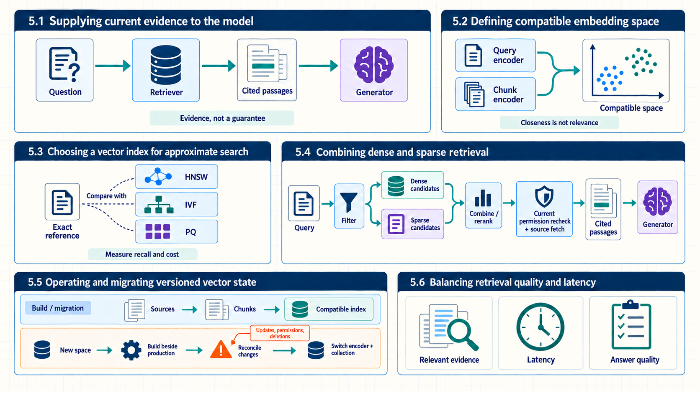
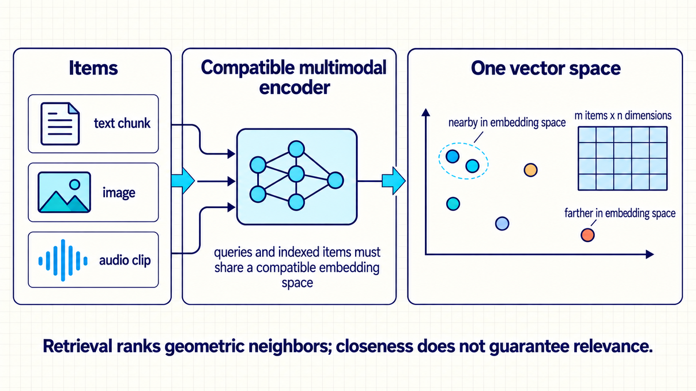
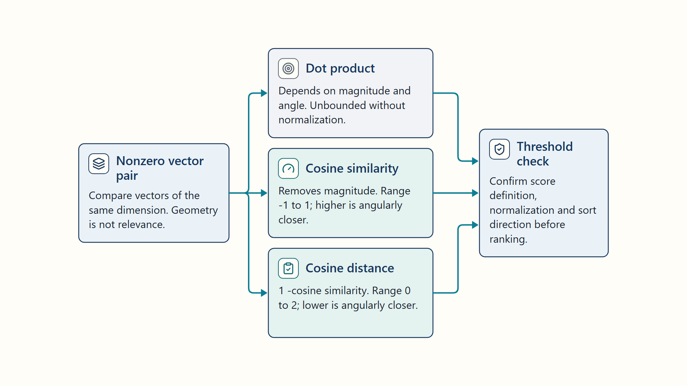
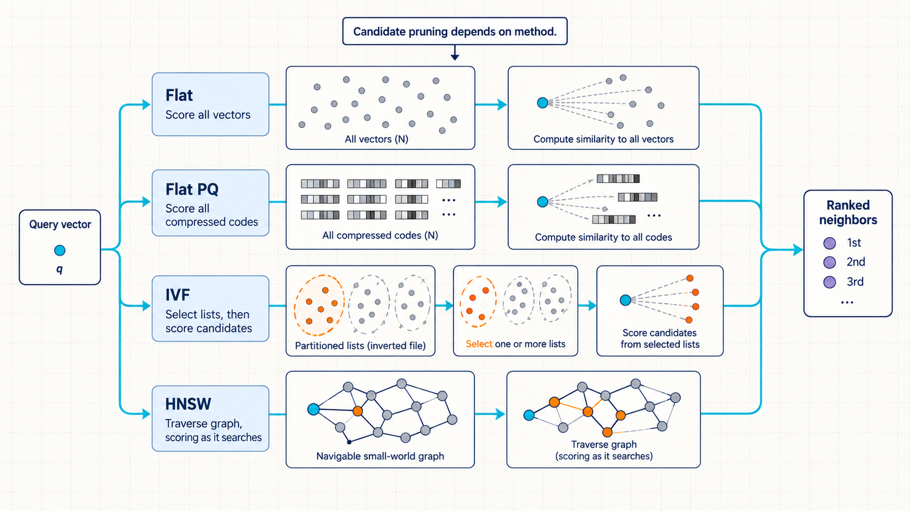
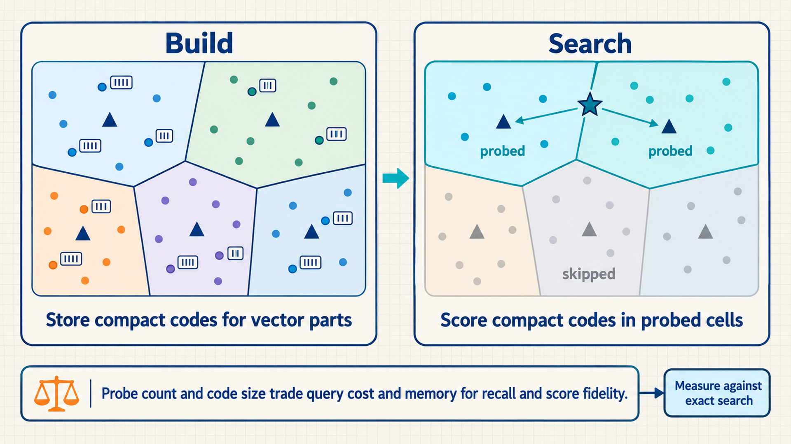
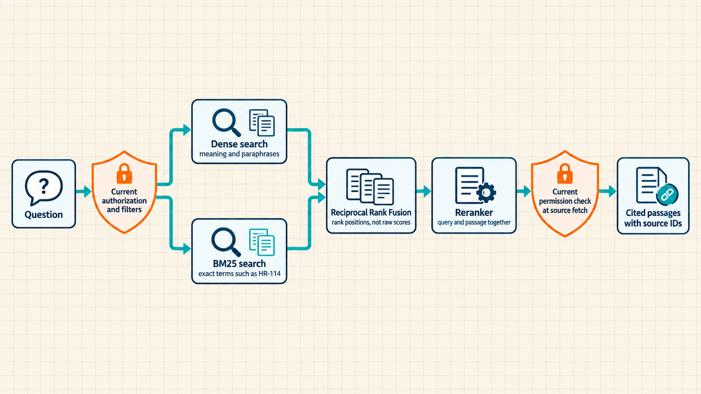
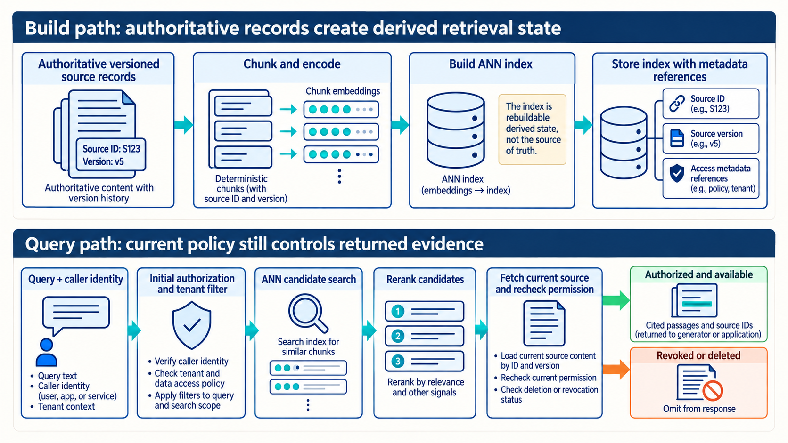
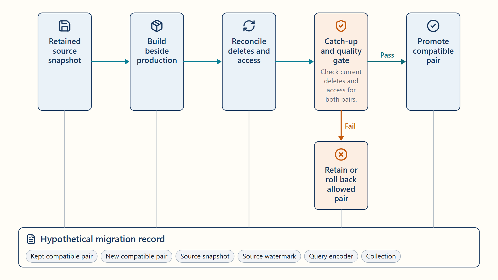
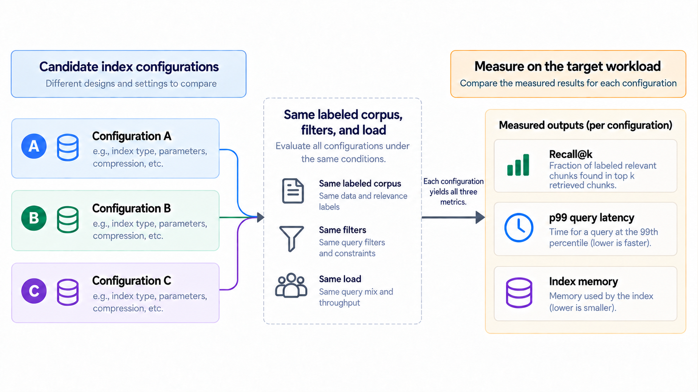
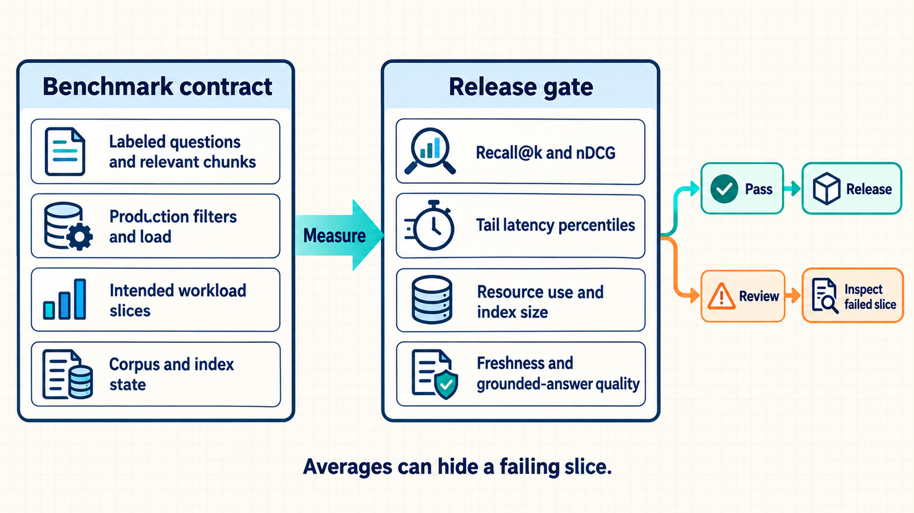

5 Retrieving evidence for grounded answers
Suppose the remote-work policy changes after the model served in Chapter 4 was trained. Its weights cannot contain that update, but it can still produce a fluent answer. The grounded-answer service finds current passages the user is allowed to read and supplies them with the question. This gives the model evidence for an answer. It does not guarantee that retrieval finds the right passage or that the model uses it faithfully.
The service must represent questions and passages so it can compare them, search a large collection within the response budget, update its index when sources change, and measure whether the right evidence arrived.
Chapter map: retrieval for grounded answers
The sections answer four linked questions:
- 5.1: Why does the service retrieve evidence at request time, and what can go wrong on that path?
- 5.2–5.4: How are passages turned into comparable vectors, searched quickly, and combined with exact word matching?
- 5.5: How does the vector collection stay correct when documents, permissions, or the embedding model change?
- 5.6: Which measurements show that retrieval finds relevant passages within the latency budget?

5.1 Supplying current evidence to the model
Consider the question of how many remote-work days a contractor may take. The model learned from earlier data, which may include last year’s policy. Retraining after every document change would be slow and expensive, and a retrained model alone would not reliably identify the document supporting its answer. Retrieval-augmented generation, introduced with the running case, takes a different route: it leaves the weights unchanged and supplies relevant passages as part of the prompt.
- Chunk: A passage cut from a source document, small enough to fit several into a prompt, that retrieval treats as one unit and cites by its source location.
The design has two paths. The build path runs when documents or encoding settings change. It splits documents into chunks and converts each chunk into a vector, a fixed-length list of numbers. A searchable index stores the vectors with source identity and access metadata.
The query path runs for every question. It converts the question into a comparable vector and searches only documents the user may read. The best candidate chunks are reordered and packed with citations into the prompt sent to the model of Chapter 4. Section 5.2 explains how the vectors are produced and compared.
Query trace: answering the contractor question
In this illustrative policy case, the search and answer follow four steps:
- Filter: The employee may read the HR policy collection but not the legal-hold folder, so the search excludes legal-hold chunks.
- Retrieve: Vector search returns 80 candidate chunks, and keyword search adds a chunk containing the exact phrase
contractor remote work. - Rerank and pack: The best eight chunks, including section 4.2 of the September policy, fit a 6,000-token context budget with their source IDs.
- Generate and cite: The model answers “up to two days per week” and cites the September policy chunk.
- Conclusion: Each step can fail independently. The trace shows which chunks the answer could use and which document it cites.
Each step has its own failure. A relevant chunk that never appears among the candidates cannot be used. An outdated chunk makes a grounded answer wrong. A chunk from a folder the user may not read is a data leak even if the answer is correct. Too many chunks exceed the context budget or lengthen prefill, as Section 4.3 showed for long prompts. The model can also ignore or contradict a correct chunk, which is the groundedness failure that Chapter 6 measures. The remaining sections address the retrieval-side failures in order.
5.2 Defining compatible embedding space
Retrieval must decide which chunks are about the same thing as a question, even when they use different words. It needs a numeric representation that permits that comparison.
- Embedding: A fixed-length numeric vector produced by a specified model and preprocessing pipeline to represent an item for comparison.1
An embedding model produces these vectors so that related texts can point in similar directions. Question and chunk vectors can be compared only when their models, preprocessing, and distance convention are compatible. Geometric closeness alone does not establish relevance.

The vector is derived state. Its identity includes the source object and version, chunk start and end offsets, normalization, embedding model and revision, dimensionality, language or modality, and transformation code. The original text or media remains the durable evidence, stored under the rules of Chapter 3. Rebuilding also needs the retained model or guaranteed service revision, tokenizer, transforms, chunk manifest, index settings, libraries, and any required build seed. Logical reconstruction does not necessarily mean byte-identical replay.
To rank candidates by direction, the service can use cosine similarity: the dot product of two vectors divided by the product of their lengths. The score compares direction rather than vector magnitude. The equation makes the normalization explicit.
\[ \cos\left(q,x\right) = \frac{q^{T}x}{\left\lVert q\right\rVert \cdot \left\lVert x\right\rVert} \tag{5.1}\]
\(q\) is the query vector and \(x\) is a candidate chunk’s vector, both nonzero and of the same dimension. \(q^{T}x\) is their dot product, the sum of products of matching components, and \(\lVert q \rVert\) and \(\lVert x \rVert\) are their Euclidean lengths. The score ranges from −1 (opposite directions) to 1 (same direction). When every vector is normalized to length 1 in advance, the score equals the dot product, which is what many indexes compute.
Example: normalized inner product and cosine similarity
A two-dimensional example shows what the score measures:
- Vectors: The query is (1, 2) and the candidate is (2, 1).
- Dot product: The aligned component products are 2 and 2, so their sum is 4.
- Norms: Each vector has Euclidean norm √5, so the norm product is 5.
- Similarity: Dividing 4 by 5 gives cosine similarity 0.8.2
- Conclusion: The vectors point in a similar but not identical direction, and multiplying either vector by a positive scalar would not change the cosine score.
Code example: Pairwise cosine for real, finite, one-dimensional nonzero vectors. The function validates the inputs and rescales each vector before the dot product to reduce overflow and underflow.
import numpy as np
def cosine_similarity(query: np.ndarray, candidate: np.ndarray) -> float:
query, candidate = np.asarray(query), np.asarray(candidate)
if query.ndim != 1 or candidate.ndim != 1:
raise ValueError("vectors must be one-dimensional")
if query.shape != candidate.shape:
raise ValueError("vectors must have the same dimensionality")
if query.size == 0:
raise ValueError("vectors must be nonempty")
if query.dtype.kind not in "iuf" or candidate.dtype.kind not in "iuf":
raise ValueError("vectors must contain real numbers")
if not np.isfinite(query).all() or not np.isfinite(candidate).all():
raise ValueError("vectors must contain only finite values")
query = query.astype(np.result_type(query.dtype, np.float64), copy=False)
candidate = candidate.astype(np.result_type(candidate.dtype, np.float64), copy=False)
query_scale, candidate_scale = np.max(np.abs(query)), np.max(np.abs(candidate))
if query_scale == 0 or candidate_scale == 0:
raise ValueError("cosine similarity is undefined for a zero vector")
# Positive scaling preserves direction and avoids raw norm overflow/underflow.
query, candidate = query / query_scale, candidate / candidate_scale
denominator = np.linalg.norm(query) * np.linalg.norm(candidate)
score = np.dot(query, candidate) / denominator
return float(np.clip(score, -1.0, 1.0))Code walkthrough: pairwise cosine similarity
For real, finite, one-dimensional nonzero vectors, this function computes one pairwise score. It does not implement normalize-once search or demonstrate a speedup:
- Input checks: Both inputs must be nonempty, one-dimensional, equally shaped arrays of finite real numbers.
- Scale check: A zero vector is rejected because its direction is undefined. Each remaining vector is divided by its largest absolute component before norm and dot-product calculations, which reduces overflow and underflow without changing direction.
- Numerator:
np.dotmeasures aligned component magnitude after scaling. - Normalization: Dividing by both Euclidean norms removes vector magnitude. The final clamp only corrects floating-point roundoff just outside the mathematical range from −1 to 1.
- Result: The function implements cosine similarity and rejects invalid vectors before scoring.
- Limits: Production retrieval usually uses a vectorized library or index, so dtype, normalization, numerical tolerance, and similarity-versus-distance direction are part of the implementation.

Metric definition: vector distance and similarity metrics
Vector metrics compare learned representations. Semantic relevance depends on model training and evaluation on the intended task, not geometry alone:
- Thresholds require recalibration when the embedding model, normalization, or distance metric changes.
- The score definition states whether larger or smaller is better, its valid range, and every transformation applied before ranking.
5.3 Choosing a vector index for approximate search
Every candidate can be scored exactly when the collection is small. The policy corpus of a large company can hold tens of millions of chunks, and exhaustive comparison makes query work grow with the corpus, though it can remain practical with suitable hardware, batching, or filters. Approximate methods reduce cost through candidate pruning, compressed scoring, or both, and are compared with an exact reference.
- Approximate Nearest Neighbor (ANN) search: Retrieval that approximates the exact nearest-neighbor result. Some methods prune candidates, while flat product-quantized search can scan every compressed vector.3
The comparison separates an exact reference method from three ways to reduce search or storage cost. HNSW (Hierarchical Navigable Small World) follows links in a layered graph of nearby vectors. IVF (inverted file) divides vectors into coarse groups and probes selected groups at query time. Product quantization stores compact codes for parts of each vector, making distance scores approximate. A flat scan can still score every code.4

| Method | Core idea | Strength | Trade-off |
|---|---|---|---|
| Flat / exact | Scoring every vector | Reference-quality results and simple updates | Latency and compute grow with corpus size |
| HNSW | Navigating a layered proximity graph | Tunable recall and query effort on the target corpus | Memory-heavy graph, build/update tuning matters |
| IVF | Probing selected coarse clusters | Controls scanned fraction with nprobe |
Misses neighbors in unprobed cells |
| Product quantization | Compact codebooks for vector subspaces | Large memory reduction and fast approximate distance | Compression reduces score fidelity |
| IVF-PQ | Probing coarse cells and scoring compressed codes | Scales large collections within memory limits | Two approximation stages require calibration |

Example: turning vector parts into product-quantization codes
A four-value vector makes the representation change visible. This small codebook is illustrative, not a recommended index configuration:
- Split into subspaces: The stored vector \([0.9, 1.8, 4.8, 3.2]\) becomes two two-value parts: \([0.9, 1.8]\) and \([4.8, 3.2]\).
- Choose representative IDs: Suppose the first part is nearest to representative B = \([0, 2]\) and the second is nearest to representative D = \([5, 3]\). The vector is stored as code
(B, D)instead of four original values. All vectors share the small representative tables, called codebooks. - Approximate the score: For query \([1, 2, 5, 4]\), the codebook lookups give squared distances 1 to B and 1 to D, for an approximate total of 2. The exact squared distance to the original vector is 0.73, so compression has changed the score.
- Combine with IVF: IVF first selects coarse groups of candidate vectors. Product quantization then scores the compact codes inside those selected groups. Candidate pruning and compressed scoring are separate approximation steps.
- Conclusion: Product quantization keeps representative IDs and shared codebooks, not every original coordinate. Smaller storage comes with score error that must be measured against the exact reference.
HNSW efSearch and IVF probe count control query effort. Graph connectivity and quantization code size are generally build or storage settings whose changes can require rebuilding. None is a universal default. Higher search effort usually improves recall and consumes more latency or compute. Index build time, memory amplification, background compaction, and update lag belong in capacity planning.
Index traversal trace: multi-layer HNSW graph search
One query descends the graph and stops at a best-found set, which shows where efSearch acts:
- Entry: The query starts from the stored upper-layer entry and greedily improves its position while descending through the upper layers.
- Expansion: At the bottom layer, the search maintains candidate, visited, and best-found sets.
efSearchbounds the working best-found set, not the total number of visited or expanded neighbors. - Termination: The heuristic stops when its candidate-distance condition is met and returns the best k found identities. It does not prove that no better unexplored path exists.5
- Trade-off: Increasing
efSearchpermits a broader working set and generally raises recall while increasing tail latency and CPU work. The chosen value is measured on the target corpus and filter mix. - Conclusion: The trace makes HNSW’s quality–latency control visible instead of treating
efSearchas a universal constant.
5.4 Combining dense and sparse retrieval
ANN search returns chunks with nearby vectors, but geometric closeness can miss exact identifiers, rare names, part numbers, or domain terms that the embedding model saw rarely, such as the policy code HR-114. Recency and access-control rules are separate hard predicates, not weaknesses solved by lexical ranking. A staged retriever assigns each step a role in finding candidates, filtering, scoring, or packing them.
Sparse lexical retrieval scores indexed text units by the query words they contain. BM25 is one such ranking function. It gives each matching term more weight when it is rare across the collection, adds less for each repeated occurrence, and corrects for text length so a longer passage does not win merely by containing more words.6 Each indexed unit here is a chunk, although BM25 descriptions often call it a document. Because it matches exact tokens, BM25 can find HR-114 when the embedding does not, subject to how the lexical tokenizer splits such identifiers.

A staged retrieval pipeline executes across six coordinated phases.
- Filter before broad search. Tenant, access-control, language, date, and document-type constraints apply as early as the index architecture permits.
- Find semantic candidates. The dense generator uses the embedding revision bound to the collection to retrieve similar vectors.
- Find exact lexical candidates. The sparse generator gathers exact token matches, part numbers, and rare domain identifiers.7
- Fuse ranks. Reciprocal Rank Fusion (RRF) combines the dense and sparse rankings by each chunk’s position, without adding raw scores that use incompatible scales.8
- Rerank the merged set. A reranker scores a smaller candidate set to improve its order. A cross-encoder reranker reads the query and each leading candidate together, which captures word-level interactions that a single vector comparison misses, at a higher cost per candidate.9
- Assemble cited context. The packer deduplicates passages, fits them within the token budget, formats citations, and retains source IDs for later answer auditing.
\[ \operatorname{RRF}\left(d\right) = \sum_{r \in \left\{\mathrm{dense},\mathrm{sparse}\right\}} \frac{1}{k+\operatorname{rank}_r\left(d\right)} \tag{5.2}\]
\(\operatorname{RRF}(d)\) is the fused score of chunk \(d\), \(\operatorname{rank}_r(d)\) is its position in ranking \(r\) (1 is best), and \(k\) is a smoothing constant, 60 in the original experiments, that limits how much the top positions dominate. A chunk absent from a ranking contributes nothing from it. Both retrievers must use the same chunk-ID scheme so a shared item can be recognized across rankings. Their candidate sets need not be identical. Only positions enter the formula, so their incompatible raw scores never need to be compared.
Example: three chunks in two rankings
With \(k = 60\), the fused score rewards agreement between the two rankings:
- Chunk X: Rank 1 in dense, rank 5 in sparse: 1/61 + 1/65 \(\approx\) 0.0318.
- Chunk Y: Rank 3 in dense only: 1/63 \(\approx\) 0.0159.
- Chunk Z: Rank 2 in both: 1/62 + 1/62 \(\approx\) 0.0323.
- Fused order: Z, then X, then Y.
- Conclusion: A chunk ranked well by both retrievers can beat one ranked first by a single retriever. RRF does not calibrate scores or decide how many candidates to keep.
Code example: Illustrative hybrid retrieval sketch. Current authorization must be enforced on both branches and later source fetches; candidate counts and token budget are examples.
query_vector = embed(query, model=EMBEDDING_VERSION)
dense = vector_index.search(query_vector, top_k=80, filters=acl_filter)
sparse = lexical_index.search(query, top_k=80, filters=acl_filter)
fused = reciprocal_rank_fusion(dense, sparse)
ranked = cross_encoder.rerank(query, fused[:40])
context = pack_with_citations(ranked[:8], token_budget=6000)Code walkthrough: Reciprocal Rank Fusion hybrid search
Reciprocal Rank Fusion combines rank positions without comparing or normalizing raw score distributions:
- Vector-space identity:
EMBEDDING_VERSIONidentifies a compatible query/document encoding pipeline, which can use separately trained encoders. - Access control: The sketch requires
acl_filterto enforce current permissions on both candidate generators and later source fetches. Fail-closed authorization must be implemented and tested. The variable name does not prove enforcement.10 - Candidate fusion: Dense and sparse lists are merged by rank rather than by adding raw scores with incompatible scales.
- Cost funnel: The illustrative settings use 80 candidates per branch and rerank up to 40 fused candidates. The packer retains up to eight cited items, subject to deduplication and the 6,000-token budget.
- Result: Each stage narrows or validates state while preserving source identities for the generated answer and later evaluation.
- Limits: The sketch omits timeouts, deduplication policy, score calibration, empty-result behavior, freshness checks, and trace emission. Those belong to the production requirements.
5.5 Operating and migrating versioned vector state
The retrieval algorithm is now explicit. A production vector system also ingests updates, persists state, replicates data, rebuilds indexes, backs up metadata, and survives version changes.11 Durable source records and derived collections have separate lifecycle and recovery rules.

The build path reads versioned source records, applies deterministic chunking and embedding, writes vector records with metadata, and constructs an index. The query path embeds one query, applies authorization and filters, retrieves candidates, reranks, and returns source identifiers. Both paths use compatible schemas and a jointly specified query/document embedding pipeline.12 Compatible encoders need not have identical weights or input formatting.
The recovery map distinguishes authoritative records from derived vector state that may be restored or rebuilt.13 An access-control list (ACL) records which users or groups may perform specified actions on a resource. Keeping the document’s ACL with its chunks lets the retrieval service restrict access, but the service must still check the current permissions when it answers a query.
| State | System of record | Recovery action |
|---|---|---|
| Original document/media | Durable object or document store | Exact-version read by immutable ID |
| Chunk manifest | Versioned metadata table | Recreate chunk text and ordering |
| Embedding record | Vector collection plus model/preprocess metadata | Re-embed missing or invalid records |
| ANN index | Derived index files and build configuration | Restore compatible snapshot or rebuild |
| ACL and tenant metadata | Authoritative application/identity store | Reapply and verify before serving |
| Query/evaluation traces | Governed telemetry store | Replay workload-matched cases after recovery |

An ordinary unaligned embedding-model change requires a new compatible vector configuration. Mixing incompatible vectors in one search space breaks score interpretation. A physical collection can hold separately configured vector spaces, and compatibility exceptions need evidence.14 The migration controller builds vectors for the existing source records and validates a new versioned collection. A release descriptor is an immutable record identifying the component versions selected to work together. Here it identifies the query encoder and collection. Chapter 8 extends that record to the complete serving system. Routing reads this record so a request uses a compatible pair. Deletion records and source-version reconciliation keep deleted content out of retrieval.
A source watermark identifies a position in the source’s ordered change history through which all required changes have been applied. In this migration, the position covers document updates, permission changes, and deletions. Reaching the same watermark means that two collections have applied the same range of source changes, not that their embeddings or search results are identical.
- Freeze the source. Record the source snapshot, chunking revision, access-control metadata, and deletion watermark that define the migration input.
- Build beside production. Write embeddings and the ANN index into a new versioned collection, and leave the current alias untouched while workers retry.
- Catch up and reconcile. Pause source changes or use dual writes/change-log replay until inserts, updates, deletions, and ACL changes are reflected at one agreed source watermark. Compare expected and actual source, chunk, vector, tenant, dimension, and delete counts, and test retrieval against the prior collection.
- Switch and retain. Keep source changes paused through cutover, or continue dual writes and change-log replay until the new pair serves traffic. Each request reads one release descriptor and uses its query encoder and collection for the whole retrieval. Change that descriptor only after the catch-up and quality gates pass. A collection-alias operation alone does not switch an external encoder.15 Retain the old compatible pair for rollback only while it also meets current deletion and access requirements, and record the release transition.
The same build-beside, reconcile, and publish-one-pointer pattern protected checkpoints in Section 3.4. Chapter 8 shows what happens when the reconcile step is skipped.
5.6 Balancing retrieval quality and latency
The vector service has a defined build path, query path, and migration method. Index microbenchmarks alone cannot show whether retrieval supplies relevant evidence to the LLM under production filters and load. Retrieval quality, tail latency, resource use, freshness, and end-to-end grounded-answer quality are measured on intended workload slices, using a set of test questions whose relevant chunks people have labeled. Recall@k measures the fraction of labeled relevant chunks found among the top \(k\) retrieved chunks.
\[ \mathrm{Recall}@k = \frac{\lvert R_k \cap G \rvert}{\lvert G \rvert} \tag{5.3}\]
\(R_k\) is the set of the top \(k\) retrieved chunks for one question, \(G\) is the labeled set of relevant chunks for it, and \(\lvert\cdot\rvert\) counts set members. Recall requires a nonempty \(G\). Precision@k uses the same intersection divided by a positive cutoff \(k\) instead of \(\lvert G \rvert\): recall asks how much of the relevant evidence arrived, and precision asks how much of what arrived is relevant. At a fixed cutoff, unfilled result positions contribute no relevant item but remain in the denominator.
Example: Recall@5 and precision@5 for ranked candidates
One labeled question has four relevant chunks. They may come from fewer than four source documents, but the metric counts unique chunk IDs after duplicate results are removed:
- Reference set: Human labels identify relevant chunks C1, C2, C3, and C4.
- Retrieved set: The top five distinct chunk IDs are C1, C2, C3, X1, and X2, where X1 and X2 are irrelevant.
- Intersection: Three retrieved identities belong to the reference-relevant set.
- Recall: Dividing 3 by 4 gives recall@5 of 0.75.16
- Precision: Dividing 3 by 5 gives precision@5 of 0.60.
- Conclusion: The scores measure evidence coverage and purity, not ranking order or whether the generator cites and uses the evidence correctly.
ANN recall@k: For a positive cutoff \(k\), the fraction of an exact search’s \(k\) reference IDs that an approximate top-\(k\) search returns when both use the same stored vectors, distance metric, and filters. The benchmark includes queries only when at least \(k\) vectors remain eligible after filtering and uses one declared deterministic rule to break ties at the exact-search cutoff. The reference set then has exactly \(k\) IDs and the denominator is \(k\). Other queries are reported separately or use a predeclared smaller cutoff. This metric measures search approximation, not whether the chunks are useful evidence.
Example: ANN recall and relevance recall can disagree
For one query, exact vector search returns IDs A, B, and C, while approximate search returns A, B, and D. ANN recall@3 is 2 ÷ 3 because A and B match the exact reference. Human labels say A and D are the two useful chunks, so relevance Recall@3 is 2 ÷ 2 = 1.0. ANN recall answers whether the approximate index preserves geometric neighbors. Relevance recall answers whether retrieval supplies useful evidence. An index release can use the first to tune approximation and the second to judge task quality.
Neither measure cares where in the top \(k\) a relevant chunk appears, yet the packer and the model see the first positions first. Mean reciprocal rank (MRR) averages the inverse position of the first relevant result across questions. Normalized discounted cumulative gain (nDCG) scores the ordering of graded relevant results in the top \(k\) against their ideal order.
\[ \mathrm{MRR} = \frac{1}{\lvert Q \rvert} \sum_{i=1}^{\lvert Q \rvert} \frac{1}{\operatorname{rank}_i} \tag{5.4}\]
\(\mathrm{MRR}\) is the mean reciprocal rank over a question set \(Q\), and \(\operatorname{rank}_i\) is the position of the first relevant chunk for question \(i\). A question with no relevant chunk in the list contributes zero.17
\[ \mathrm{nDCG}@k = \frac{\mathrm{DCG}@k}{\mathrm{IDCG}@k}, \quad \mathrm{DCG}@k = \sum_{i=1}^{k} \frac{2^{\mathrm{rel}_i}-1}{\log_2\left(i+1\right)} \tag{5.5}\]
\(\mathrm{nDCG}@k\) is normalized discounted cumulative gain. \(\mathrm{rel}_i\) is the nonnegative relevance grade of the chunk at position \(i\) (0 or 1 for binary labels, or larger grades for more useful chunks), and the logarithm discounts gains at lower positions. \(\mathrm{IDCG}@k\) is the same sum for the ideal ordering of the known relevant chunks. When that ideal score is positive, the ratio lies between 0 and 1.18
For the benchmark described here, questions with no labeled relevant evidence form a separate no-answer group rather than receiving an invented recall or nDCG value. That group tests whether the service avoids an unsupported answer. Recall and nDCG averages report their included question counts alongside the no-answer count. This is a declared evaluation policy: other tools may assign zero to an undefined case, so their aggregate scores are comparable only when the case-selection and averaging rules agree.
Example: MRR and nDCG@5
Binary labels keep the arithmetic visible:
- MRR over three questions: The first relevant chunk appears at rank 1, rank 3, and not at all. MRR = (1 + 1/3 + 0) ÷ 3 \(\approx\) 0.44.
- nDCG@5 for one question: Two relevant chunks appear at positions 2 and 3. DCG = 1/log₂3 + 1/log₂4 \(\approx\) 0.631 + 0.500 = 1.131.
- Ideal ordering: The two relevant chunks at positions 1 and 2 give IDCG = 1/log₂2 + 1/log₂3 \(\approx\) 1.631.
- Normalized score: 1.131 ÷ 1.631 \(\approx\) 0.69.
- Conclusion: Recall@5 is 1.0 for this question, but nDCG shows that the relevant chunks sit below an irrelevant one. Moving them up would change which chunks the packer retains when the budget is tight.


A reproducible acceptance criterion includes retrieval quality, latency, resources, freshness, reliability, and end-to-end answer quality.
| Dimension | Minimum measurement | Required slice |
|---|---|---|
| Retrieval quality | Recall@k, precision@k, MRR or nDCG | Query type, language, tenant, document age |
| Latency | p50/p95/p99 build and query stage timing | Concurrency, corpus size, filter selectivity |
| Resources | Memory, CPU/GPU, storage, network, index size | Steady state and rebuild |
| Freshness | Source commit to searchable time | Insert, update, delete, full re-embedding |
| Reliability | Error rate, recovery time, replica divergence | Node loss, restart, partial ingestion |
| End-to-end | Citation precision and grounded answer quality | Full RAG workload and evaluator cases |
Retrieval trade-off analysis: balancing recall and latency in hybrid search
These hypothetical measurements compare three operating points, not a measured global Pareto frontier:
- Candidate A: Recall@5 is 0.82 at p99 query latency of 95 ms with a 1.4 GB index.
- Candidate B: Recall@5 is 0.79 at p99 latency of 42 ms with a 0.8 GB index.
- Candidate C: Recall@5 is 0.86 at p99 latency of 180 ms with a 2.1 GB index.
- Decision: If the product requires recall \(\geq\) 0.80 and p99 \(\leq\) 120 ms, Candidate A is feasible, B misses recall, and C misses latency. The same comparison is repeated on tenant and document-age slices before release.
- Conclusion: A Pareto comparison makes the selected operating point explicit and keeps a single aggregate score from hiding a failed constraint.
Chapter 8 places the retrieval latency inside the service’s total time to first token, where it competes with reranking and prefill for the same budget.
Chapter 5 summary
Key retrieval principles and trade-offs established in this chapter:
- Core mechanisms: A build path turns versioned documents into embedded chunks and an index. A query path filters by permission, combines dense and BM25 candidates with rank fusion, reranks, and packs cited context. Recall and precision measure coverage, and MRR and nDCG measure ranking order.
- Governing trade-offs: More search effort can improve recall at extra latency or compute cost. Additional candidates and reranking can improve relevance, which must be measured on the intended workload. Dense retrieval can match meaning, while sparse retrieval can preserve exact identifiers.
- Failure modes & defenses: Incompatible vector spaces break score interpretation, so a change that creates an incompatible space builds a new collection beside production and switches one release descriptor. A system can keep separate compatible spaces when that better fits the use case. Current-permission filtering and reconciled counts keep deleted or restricted documents out.
Chapter checkpoint
Review Questions 23–28 in Appendix B, Section B.1, to test embedding migration, index choice, rank fusion, benchmark design, and the similarity, fusion, and ranking-metric calculations before moving to measurement.
Carry-forward result
The grounded-answer service now retrieves authorized, current passages with source identities and measured quality.
Retrieval alone does not show that the model’s answer actually uses those passages faithfully, or that the service stays healthy under load. Chapter 6 builds the telemetry and evaluation that separate those questions.
Karpukhin, V., Oguz, B., Min, S., Lewis, P., Wu, L., Edunov, S., Chen, D., & Yih, W.-t. (2020). Dense passage retrieval for open-domain question answering. In Proceedings of EMNLP 2020 (pp. 6769–6781). Association for Computational Linguistics. DOI: 10.18653/v1/2020.emnlp-main.550. https://aclanthology.org/2020.emnlp-main.550/. DPR demonstrates separately learned query/passage encoders in a shared comparison space on open-domain QA datasets. It is not a universal semantic-relevance guarantee.↩︎
Faiss maintainers. (2024, December 3). MetricType and distances (Faiss project wiki). https://github.com/facebookresearch/faiss/wiki/MetricType-and-distances. Faiss documents inner product after unit normalization as cosine similarity. The arithmetic is geometric, not a measured relevance result.↩︎
Faiss maintainers. (2025, July 28). Faiss indexes (Faiss project wiki). https://github.com/facebookresearch/faiss/wiki/Faiss-indexes. The official Faiss index table distinguishes exhaustive flat search, IVF selection, and compressed scoring. Performance rankings depend on corpus, hardware, filters, and settings.↩︎
Faiss maintainers. (2025, July 28). Faiss indexes (Faiss project wiki). https://github.com/facebookresearch/faiss/wiki/Faiss-indexes. The official Faiss index table distinguishes exhaustive flat search, IVF selection, and compressed scoring. Performance rankings depend on corpus, hardware, filters, and settings.↩︎
Malkov, Yu. A., & Yashunin, D. A. (2018). Efficient and robust approximate nearest neighbor search using Hierarchical Navigable Small World graphs (arXiv:1603.09320v4). arXiv. https://arxiv.org/abs/1603.09320v4. Original Algorithms 2 and 5 maintain candidate, visited, and best-found sets. ef bounds the best-found working set, not total visited nodes, and search remains approximate.↩︎
Robertson, S., & Zaragoza, H. (2009). The probabilistic relevance framework: BM25 and beyond. Foundations and Trends in Information Retrieval, 3(4), 333–389. DOI: 10.1561/1500000019. https://doi.org/10.1561/1500000019. The monograph derives BM25’s inverse-document-frequency weight, term-frequency saturation, and document-length normalization. Parameter values and identifier matching still depend on tokenization and the collection.↩︎
Robertson, S. E., Walker, S., Jones, S., Hancock-Beaulieu, M. M., & Gatford, M. (1995). Okapi at TREC-3. In D. K. Harman (Ed.), Overview of the Third Text REtrieval Conference (TREC-3) (NIST SP 500-225, pp. 109–126). NIST. https://www.microsoft.com/en-us/research/wp-content/uploads/2016/02/okapi_trec3.pdf. Okapi at TREC-3 documents term-based ranking with frequency and length effects. Identifier behavior still depends on tokenization, so lexical ranking does not guarantee every exact match.↩︎
Cormack, G. V., Clarke, C. L. A., & Büttcher, S. (2009). Reciprocal rank fusion outperforms Condorcet and individual rank learning methods. In Proceedings of SIGIR 2009 (pp. 758–759). ACM. DOI: 10.1145/1571941.1572114. https://cormack.uwaterloo.ca/cormacksigir09-rrf.pdf. The original formula sums reciprocal rank offsets, not normalized raw scores or probabilities. Its experiments are not proof of universal dense-plus-sparse superiority.↩︎
Nogueira, R., & Cho, K. (2020). Passage re-ranking with BERT (arXiv:1901.04085v5). arXiv. https://arxiv.org/abs/1901.04085v5. The BERT reranking paper jointly scores query/passage pairs after first-stage retrieval. It cannot recover relevant items missing from the candidate pool, and the example counts are illustrative.↩︎
Microsoft. (2026, August 24). Security filters for trimming results in Azure AI Search (Examples use API 2026-04-01). https://learn.microsoft.com/en-us/azure/search/search-security-trimming-for-azure-search. Azure’s security-filter pattern requires filtering every query and distinguishes filtering from principal authentication. The surrounding integration policy extends this requirement to both branches and source fetches.↩︎
Qdrant. (n.d.). Distributed deployment (Operations documentation). https://qdrant.tech/documentation/scaling/distributed_deployment/. Qdrant documents configured sharding and replication capabilities. This sentence is an operating requirement, not a guarantee that every unspecified vector database meets it by default.↩︎
Karpukhin, V., Oguz, B., Min, S., Lewis, P., Wu, L., Edunov, S., Chen, D., & Yih, W.-t. (2020). Dense passage retrieval for open-domain question answering. In Proceedings of EMNLP 2020 (pp. 6769–6781). Association for Computational Linguistics. DOI: 10.18653/v1/2020.emnlp-main.550. https://aclanthology.org/2020.emnlp-main.550/. DPR uses separate query and passage encoders. Compatibility does not require identical encoder weights or identical preprocessing roles.↩︎
Qdrant. (n.d.). Snapshots (Operations documentation). https://qdrant.tech/documentation/snapshots/. Qdrant snapshots have specific scope and restore-version constraints. Retaining a backup is not evidence that this deployment has passed a restore test.↩︎
Qdrant. (n.d.). Migrate to a new embedding model with zero downtime in Qdrant (Operations documentation). https://qdrant.tech/documentation/tutorials-operations/embedding-model-migration/. Qdrant documents new collections or separate vector configurations, backfill, and dual writes for model migration. This does not establish compatibility for an arbitrary pair of models.↩︎
Qdrant. (n.d.). Collections (Collection aliases and switching). https://qdrant.tech/documentation/manage-data/collections/. Qdrant supports atomic grouped alias actions within its collection API. The request descriptor and query-encoder coordination lie outside that atomic boundary.↩︎
National Institute of Standards and Technology & trec_eval contributors. (n.d.). m_recall.c (Official metric implementation, main branch as checked September 22, 2026). https://github.com/usnistgov/trec_eval/blob/main/m_recall.c. trec_eval implements relevant-retrieved divided by known-relevant at a document-ranking cutoff. This guide applies the same fraction to distinct chunk IDs and a nonempty four-chunk relevance set. It does not aggregate by source document or measure ANN recall against exact top-k neighbors.↩︎
Voorhees, E. M. (1999). The TREC-8 question answering track report. In E. M. Voorhees & D. K. Harman (Eds.), Proceedings of the Eighth Text REtrieval Conference (TREC-8) (NIST Special Publication 500-246, pp. 77–82). National Institute of Standards and Technology. https://trec.nist.gov/pubs/trec8/papers/qa_report.pdf. The TREC-8 question answering track scored systems by the reciprocal rank of the first correct response, averaged over questions. Chunk-level relevance labels are this book’s adaptation.↩︎
Järvelin, K., & Kekäläinen, J. (2002). Cumulated gain-based evaluation of IR techniques. ACM Transactions on Information Systems, 20(4), 422–446. DOI: 10.1145/582415.582418. https://doi.org/10.1145/582415.582418. The paper defines discounted and normalized cumulated gain for graded relevance. The exponential gain 2^rel − 1 and the log₂(i + 1) discount shown here are widely used later variants of the original definition. For binary labels the gain equals the original.↩︎